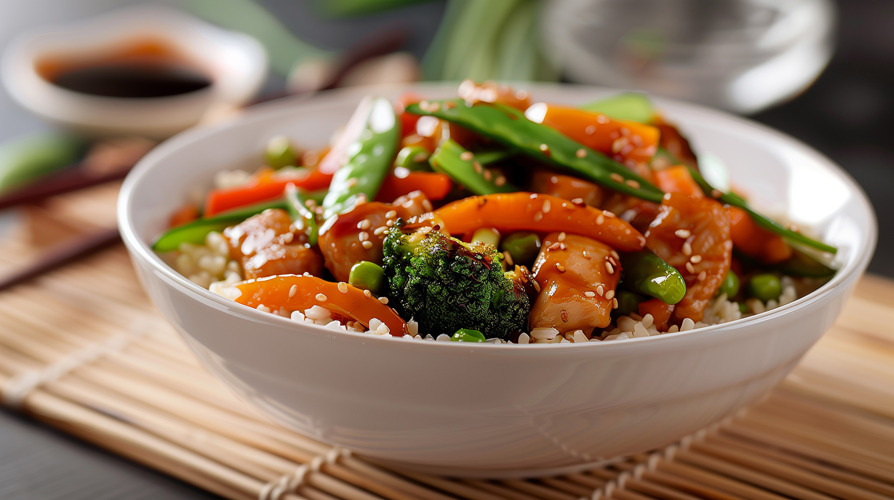
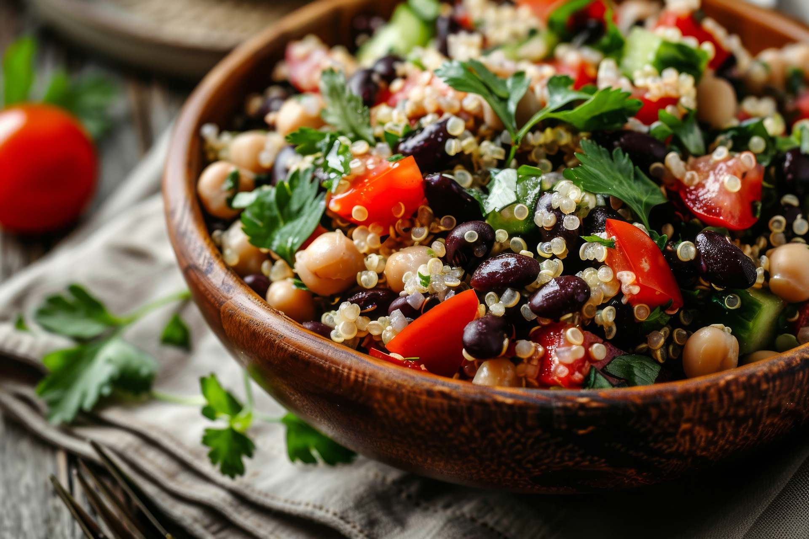
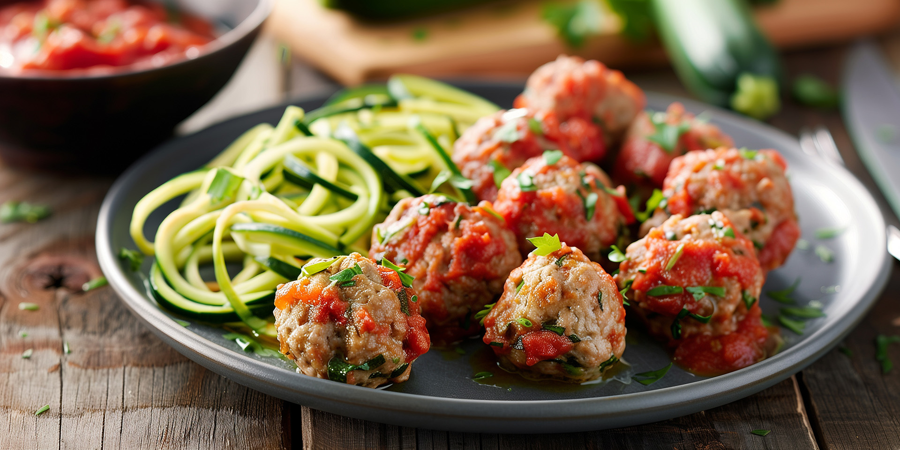

Meal Prep Mastery
Meal prepping is a game-changer for anyone looking to take control of their diet, save time, and stay consistent with their health goals. Whether you’re aiming to build muscle, lose weight, or simply eat cleaner, having a fridge stocked with ready-to-go meals can make all the difference. But for many, the idea of dedicating hours to cooking and portioning meals can feel overwhelming. The good news? With the right strategies and recipes, meal prep can be both easy and enjoyable.
In this guide, we'll introduce you to the basics of meal prep and share three simple recipes that cater to a variety of dietary goals. From high-protein dishes for bulking to low-carb options for cutting, these recipes are designed to fit seamlessly into your routine, no matter your level of cooking experience. So, grab your containers and let’s dive into the world of meal prep mastery—your future self will thank you!

High-Protein Chicken Stir-Fry
Ingredients
- 2 lbs chicken breast, diced
- 4 cups mixed vegetables
- 2 cups brown rice
- 2 tbsp soy sauce
- 1 tbsp olive oil
- 1 tsp garlic powder
Instructions
- Cook brown rice according to package instructions
- In a large pan, heat olive oil and add diced chicken. Cook until browned
- Add mixed vegetables, soy sauce, and garlic powder. Stir-fry until vegetables are tender
- Divide into meal prep containers, pairing each serving with a portion of brown rice

Quinoa & Black Bean Salad
Ingredients
- 1 cup quinoa
- 1 can black beans, drained and rinsed
- 1 cup corn kernels
- 1 red bell pepper, diced
- 1 avocado, diced
- juice of 2 limes
- 2 tbsp olive oil
- 1 tsp cumin
- salt and pepper to taste
Instructions
- Cook quinoa according to package instructions and let it cool
- In a large bowl, combine quinoa, black beans, corn, bell pepper, and avocado
- In a small bowl, whisk together lime juice, olive oil, cumin, salt, and pepper. Pour over salad and toss to coat
- Portion into containers for a refreshing, protein-packed meal

Turkey Meatballs with Zoodles
Ingredients
- 1 lb ground turkey
- 1 egg
- ¼ cup almond flour
- 1 tsp Italian seasoning
- 3 zucchini, spiralized into noodles
- 1 cup marinara sauce
- 1 tbsp olive oil
Instructions
- Preheat oven to 375°F. In a bowl, mix ground turkey, egg, almond flour, and Italian seasoning. Form into meatballs
- Place meatballs on a baking sheet and bake for 20 minutes or until cooked through
- In a pan, heat olive oil and sauté zucchini noodles until tender
- Serve meatballs over zoodles with marinara sauce, and portion into containers